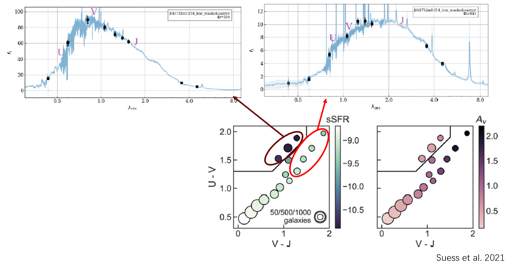

Research
Dusty Galaxies in ALMA Lensing Cluster Survey (ALCS)
This project uses optical/NIR photometry from Hubble Space Telescope (HST) and Spitzer combined with ALMA 1.2 mm continuum data across 33 galaxy lensing cluster fields. Gravitational lensing by cluster magnification enables the study of faint, dust-obscured star-forming galaxies at high redshift.
Automated spatial cross-matching between optical/NIR catalogs and 1.2 mm ALMA detections.

Optical/NIR (HST & Spitzer) and ALMA 1.2 mm counterpart matching in the Abell 370 cluster field.
Rescaling modified blackbody distributions to ALMA 1.2 mm flux density to derive dust temperature, infrared luminosity, and dust mass.
Deriving total star formation rates from combined unobscured UV and dust-obscured IR luminosities.
Testing resting UVJ color space to distinguish between red quiescent galaxies and dust-obscured starbursts.
